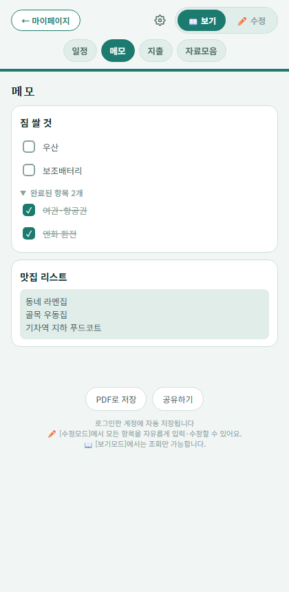

핵심 기능
메모·체크리스트
자유 메모와 체크리스트를 오가며 준비물이나 참고사항을 정리하세요.

체크리스트로 전환된 메모
메모 작성
메모 탭에서 "+ 메모 추가"로 새 메모를 만들고 제목과 내용을 자유롭게 적으세요.
체크리스트로 전환
메모 제목 옆 아이콘을 누르면 줄바꿈 기준으로 체크리스트로 바뀝니다. 다시 누르면 메모로 되돌아가고, 완료 표시는 텍스트에 그대로 남아요.
완료 항목 정리
체크한 항목은 "완료된 항목" 아래로 자동 이동합니다. 눌러서 접었다 펼 수 있어요.
체크박스는 보기모드에서도 누를 수 있어요 — 여행 중 짐 챙길 때 편리합니다.